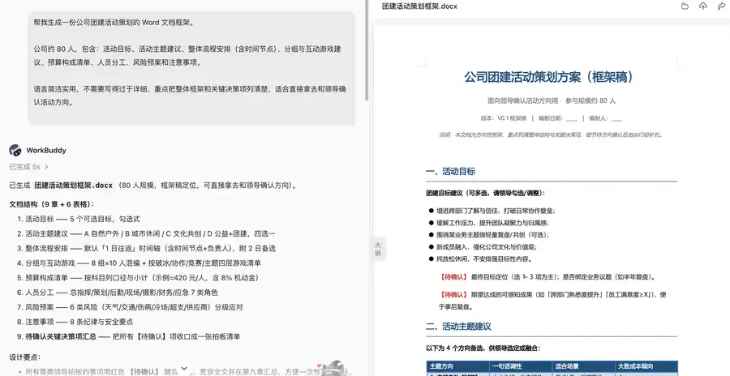
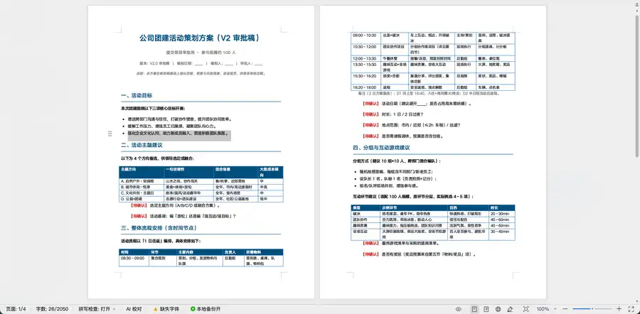
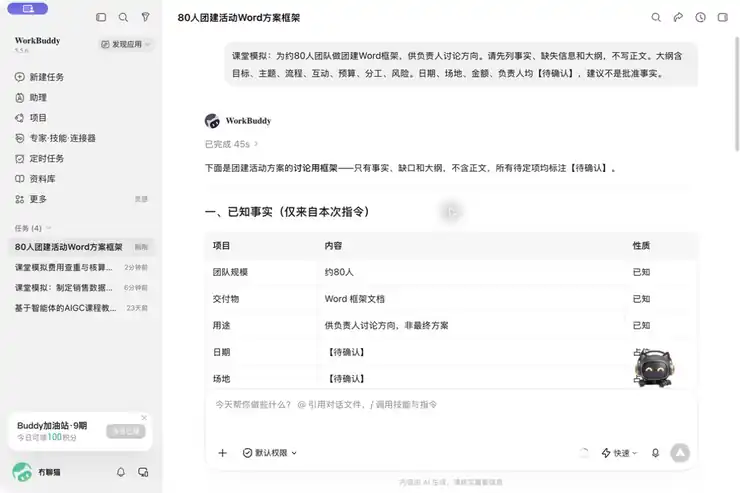
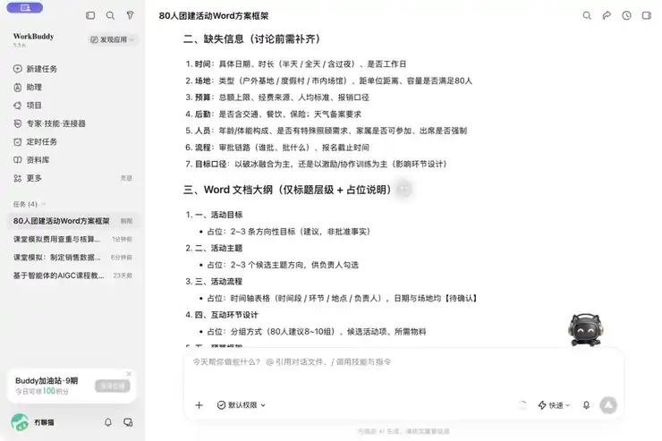
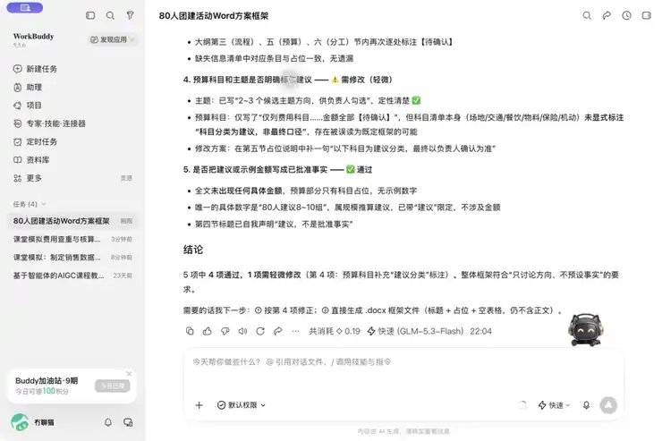

第三章 · 第10次课 · 2学时
办公实战：Word文档生成与批量处理
00 知识回顾
专家与专家团
- 专家负责一类任务的方法，专家团把不同环节分工后汇总成一个成果。
- 材料没有提供的信息不能让AI补造，生成后仍要人工核对。
01 任务预告
比较两版活动方案，完成一份差异核验报告
完成一份“两版方案差异核验”Word文档：把新增、删除、修改、仅格式变化分别列清，逐项写出原文位置、可能影响和待确认问题。
作业命名格式
10_两版方案差异核验_姓名.docx
02 基础概念
概念 1｜正式文档：先定读者和结构，再写正文

左侧说明人数、文档用途和结构要求；右侧框架稿列出活动目标与待确认事项。① 正式文档需要让指定读者完成一件事。先说清交给谁、用于讨论还是审批、依据什么材料、需要哪些章节，再让AI写初稿。
② 截图中先明确约80人规模、简洁实用和讨论活动方向的用途，再生成策划框架。正文将目标建议与【待确认】事项分开；AI给出的示例费用或安排仍须人工核实，不能视为已批准事实。
思考题： 只说“写一份正式方案”，没有读者和材料，AI写得完整就能提交吗？
参考答案：点击展开
答案： 不能。还要确认受众、用途、结构和事实来源，检查标题、预算与缺失项。
概念 2｜版本对比：逐项定位变化，再判断影响
![概念示意图：活动方案的新增、删除、修改和仅格式变化四类差异。]() 概念示意图｜逐项看旧版与新版，先记录变化，再核对原句和真实样式。
概念示意图｜逐项看旧版与新版，先记录变化，再核对原句和真实样式。① 版本对比把变化分为新增、删除、修改和仅格式变化；批量处理则把同一规则用于多份文件。两者都要先确定输入范围、输出命名和检查口径，避免覆盖原稿。
② 图中以课堂模拟活动方案说明四类变化。教师团建案例只修订一份文档；学生实践比较两版方案。若以后批量生成同类Word，每份都要分别检查人数、日期、表格与待确认项，不能只看第一份成功。
思考题： “不接受现场报名”在新版中消失，可以直接说“新版允许现场报名”吗？
参考答案：点击展开
答案： 不能。只能确认原句被删除；是否允许现场报名仍要询问负责人，不能把删除否定句直接当成新的批准。
03 核心案例
例子｜从团建需求到可审阅的Word策划方案
案例背景
假如你是公司行政助理，负责人让你先为约80人的团队起草团建框架，用于讨论活动方向。初稿审阅后，负责人明确提出：规模调整为100人，目标压缩为3条，流程改成表格，细化预算项目，并补充迟到、设备故障、超时及安全问题的预案，形成供审批的v2。初稿与修改任务都有具体用途，日期、场地、费用和人选尚未确认。以下需求作为课堂模拟，截图用来观察文档结构和修改结果。
案例图

v2稿标明100人规模，目标压缩为3条，流程使用表格，日期和场地等事项仍标为【待确认】。① 对照前面的约80人框架稿，本图显示文档已转为100人规模的审批稿。人数和用途变化来自明确的修改要求，不能由AI自行决定。
② 目标、流程、分组安排和风险预案按反馈调整，其他未知事实仍为【待确认】。“审批稿”只是交付用途，不代表方案已经批准或正式生效。
教师演示步骤
步骤①｜整理事实与文档要求
教师分别列出两轮要求：第一轮为约80人、提交部门负责人讨论方向、语言简洁实用；第二轮明确调整为100人，并要求目标压缩、流程表格化及补充预算与风险预案。日期、场地、费用和具体负责人仍待确认。学生观察哪些是已确认修改，哪些只是AI建议。
检查标准：两轮人数要求分开记录，日期、场地和费用不猜填；下面的实际对话先展示约80人初稿的已知与待确认项。

看提示词与“已知事实”表：约80人和讨论用途有依据，日期、场地、金额与负责人仍为【待确认】。步骤②｜先让AI列结构和处理计划
教师在WorkBuddy新任务中输入：“为约80人的团队起草团建策划，提交部门负责人讨论活动方向。先列可用事实、缺失信息和文档大纲，不写完整正文。大纲包含目标、主题建议、流程、互动安排、预算构成、分工、风险预案；未知事项写【待确认】，建议须标明是建议。说明DOCX输出与检查步骤。”学生观察AI是否先列结构，是否把建议当成事实。
检查标准：只返回事实、缺失项和结构计划，不抢先生成完整方案；下面的真实回复仍是标题与占位说明，没有正文。

看“缺失信息”和“Word文档大纲”：目标、主题、流程等先列结构，时间、场地与预算留待负责人确认。步骤③｜审查计划与写作口径
教师先确认初稿大纲服务于讨论方向，约80人规模与材料一致，预算示例未被当成实际支出，待确认项完整。修改前再核对负责人已经明确同意按100人规模修订；未确认的人数变化不能执行。有无依据的日期、费用或人选，先改计划再生成。
检查标准：约80人与100人分别对应两轮要求，预算建议不写成已批准金额。真实审查指出：初稿预算科目虽未填金额，仍需明确写为“建议分类，最终以负责人确认为准”；修订后才进入生成。

看第4项“需修改”：预算科目清单也要标明只是建议分类；没有具体金额，不等于所有表述都已经安全。步骤④｜生成初稿并按差异修改
计划通过后先要求生成可编辑团建框架DOCX，包含目标、主题、流程、分组、预算构成、分工与风险预案；未知事实写【待确认】。审阅后再发送明确反馈：“在上一版基础上修订为100人规模，目标压缩为3条，流程用表格，列为时间、环节、主要内容、负责人、物料；预算列项目、预计金额、数量、单价和备注，未知数字不补造；补充迟到、设备故障、超时及安全问题预案。语言正式简洁，另存v2，并列修改说明，保留v1。”学生对照截图观察修改结果，不从头重写整篇。
检查标准：v1保留，v2按差异反馈修订，修改说明与正文一致；本节案例图可对照修订结果，课堂现场还需展示具体修改操作。
步骤⑤｜打开DOCX，核对与记录修改
教师用WPS打开两版DOCX，检查v1约80人、v2为已确认的100人，目标与表格是否按反馈调整；日期、场地及未确认金额是否仍可识别。逐项回读修改说明，检查标题、编号、表格宽度与分页。“审批稿”不得误写为“已批准方案”。若工具仅返回文字，将内容粘贴到WPS并保存DOCX，再关闭重开；不能把聊天回复当作文件已保存。
检查标准：两版DOCX都能重开，标题和流程表正常，待确认项仍在；以实际打开文件的结果为准。
04 实践任务
主软件为WorkBuddy，WPS负责准备材料、人工核对和保存报告；只使用以下课堂模拟方案，不修改源文件，也不代替方案负责人作审批判断。
步骤①｜准备v3、v4方案与报告文档
在WPS分别新建policy-v3.docx和policy-v4.docx，按下方材料录入对应版本，仅复制正文，不复制括号内课堂标注。两版第1—5节和第7节按相同规则排版；v3第6节标题为正文样式，v4同一句设为“标题2”，保证仅格式变化可检查。另建最终报告，写“材料说明、AI计划、审查结论、差异清单、影响与待确认、核对记录”六个标题。
【课堂模拟材料：校园创意市集活动方案；不是真实通知】
两版具有相同章节编号；除第6节标题样式外，均采用相同字体和版式。
【v3】
1 活动安排：2026年10月16日14:00—17:00，在校园文化广场举行。
2 预算：物料费600元、宣传费200元，预算上限800元。
3 人员分工：学生社团负责布置，指导教师负责现场秩序。
4 审批条件：指导教师确认方案后方可开展；不得未经确认自行开展。
5 注意事项：参加者须提前报名；不接受现场报名。
6 联络信息：联系人及联系电话【待确认】。（本节标题为普通正文样式）
【v4】
1 活动安排：2026年10月23日14:00—17:00，在学生活动中心一楼大厅举行。
2 预算：物料费900元、宣传费300元，预算上限1200元。
3 人员分工：学生社团负责布置，后勤联络员负责现场秩序。
4 审批条件：指导教师和活动中心管理员均确认方案后方可开展；不得未经确认自行开展。
5 注意事项：参加者须提前报名。
6 联络信息：联系人及联系电话【待确认】。（本节标题改为“标题2”样式，文字内容不变）
7 天气预案：遇暴雨暂停，恢复时间另行通知。
补充说明：括号内是课堂版式标注，不属于文档正文。第6节只有样式变化。材料未提供后勤联络员姓名、联系方式、审批是否完成及方案是否正式生效。
完成后： 两份源文件可打开，章节编号对应，第6节文字一致但样式不同；报告“材料说明”记录文件名与课堂模拟性质。
步骤②｜让WorkBuddy先列比较计划
把两份DOCX放入本次WorkBuddy工作区或添加为任务材料，再发送提示词A。若读取失败，先核对路径和文件是否可打开；也可用下方完整材料做文字对比，但必须写明“未检查真实DOCX样式”，不能把格式变化说成已实测。
下方已经包含课堂材料，不需要另贴材料。
请先制定两版方案的比较计划，暂不输出最终报告。
若本任务已提供policy-v3.docx、policy-v4.docx，请先确认能读取两份文件；以DOCX为事实来源，下方文字用于课堂核对。两者不一致时列出冲突，等待确认。
比较新增、删除、修改、仅格式变化四类差异；给每项附版本、章节编号和原句。重点检查金额、日期、责任主体、审批条件、例外及否定表达。
说明如何检查真实样式，如何把可能影响与待确认问题分开；不作法律或审批结论，不改动源文件。
若只读取下方文字，声明未核验DOCX实际样式，格式部分仅依据课堂标注。
【课堂模拟材料：校园创意市集活动方案；不是真实通知】
两版具有相同章节编号；除第6节标题样式外，均采用相同字体和版式。
【v3】
1 活动安排：2026年10月16日14:00—17:00，在校园文化广场举行。
2 预算：物料费600元、宣传费200元，预算上限800元。
3 人员分工：学生社团负责布置，指导教师负责现场秩序。
4 审批条件：指导教师确认方案后方可开展；不得未经确认自行开展。
5 注意事项：参加者须提前报名；不接受现场报名。
6 联络信息：联系人及联系电话【待确认】。（本节标题为普通正文样式）
【v4】
1 活动安排：2026年10月23日14:00—17:00，在学生活动中心一楼大厅举行。
2 预算：物料费900元、宣传费300元，预算上限1200元。
3 人员分工：学生社团负责布置，后勤联络员负责现场秩序。
4 审批条件：指导教师和活动中心管理员均确认方案后方可开展；不得未经确认自行开展。
5 注意事项：参加者须提前报名。
6 联络信息：联系人及联系电话【待确认】。（本节标题改为“标题2”样式，文字内容不变）
7 天气预案：遇暴雨暂停，恢复时间另行通知。
补充说明：括号内是课堂版式标注，不属于文档正文。第6节只有样式变化。材料未提供后勤联络员姓名、联系方式、审批是否完成及方案是否正式生效。
完成后： AI只返回比较计划；列出了四类差异、原文定位方法及待确认项，将计划保存到报告“AI计划”。
步骤③｜审查分类规则和原文定位方法
检查计划是否覆盖新增、删除、修改、仅格式变化；每项是否保留两版章节与原句，是否重点核对金额、日期、责任主体、审批条件及否定表达。禁止覆盖源文件；未知内容不能补造。若AI打算把“删除不接受现场报名”直接解释为允许报名，先让它修正。
完成后： 在报告“审查结论”写“通过：仅比较并生成报告，保留源文件，结论可回查”，或“不通过：[具体问题]”；有错先修订计划。
步骤④｜生成差异清单与影响初稿
计划通过后发送提示词B。若输出DOCX，直接打开核对；若仅返回文字，把结果粘贴到报告相应章节。检查每行确实有原句和位置；“可能影响”只是供负责人核对的提示，不写成新制度已生效。
下方已经包含课堂材料，不需要另贴材料。
比较计划已经人工审查，请按确认的口径生成《两版方案差异核验报告》。
事实来源与冲突处理沿用已确认计划；只比较，不修改policy-v3.docx和policy-v4.docx。
报告分为材料说明、差异清单、可能影响、待确认问题、核对记录。
差异表列：编号、差异类别、v3位置与原句、v4位置与原句、变化说明、可能影响、人工核验状态。新增项旧版写“无对应条款”，删除项新版写“无对应条款”；同一变化不重复计数。
重点核对金额、日期、责任主体、审批条件、例外和否定表达。不能因否定句消失就断言相反行为已获批准；不能断言新版已生效。
仅格式变化须有实际DOCX样式检查依据；若只有课堂文字标注，写“依据标注，真实样式待核验”。金额合计只按给出的数字核算，不增加支出。
能够生成文件时，把报告另存为10_两版方案差异核验_姓名.docx（姓名由我填写），保留两份源文件；若无法生成文件，返回完整报告正文，并明确尚未保存DOCX。
【课堂模拟材料：校园创意市集活动方案；不是真实通知】
两版具有相同章节编号；除第6节标题样式外，均采用相同字体和版式。
【v3】
1 活动安排：2026年10月16日14:00—17:00，在校园文化广场举行。
2 预算：物料费600元、宣传费200元，预算上限800元。
3 人员分工：学生社团负责布置，指导教师负责现场秩序。
4 审批条件：指导教师确认方案后方可开展；不得未经确认自行开展。
5 注意事项：参加者须提前报名；不接受现场报名。
6 联络信息：联系人及联系电话【待确认】。（本节标题为普通正文样式）
【v4】
1 活动安排：2026年10月23日14:00—17:00，在学生活动中心一楼大厅举行。
2 预算：物料费900元、宣传费300元，预算上限1200元。
3 人员分工：学生社团负责布置，后勤联络员负责现场秩序。
4 审批条件：指导教师和活动中心管理员均确认方案后方可开展；不得未经确认自行开展。
5 注意事项：参加者须提前报名。
6 联络信息：联系人及联系电话【待确认】。（本节标题改为“标题2”样式，文字内容不变）
7 天气预案：遇暴雨暂停，恢复时间另行通知。
补充说明：括号内是课堂版式标注，不属于文档正文。第6节只有样式变化。材料未提供后勤联络员姓名、联系方式、审批是否完成及方案是否正式生效。
完成后： 报告包含四类差异、定位、影响和待确认问题；无法检查样式的地方有明确限制说明。
步骤⑤｜逐项回查，保存报告并重新打开
| 检查什么 |
正确／有错 |
| 新增、删除、修改、仅格式变化四类均有说明，未重复计数 |
[填写] |
| 每项变化有版本、章节编号与原句，金额合计可回查 |
[填写] |
| 日期、地点、责任人、审批条件和否定表达均被检查 |
[填写] |
| 第6节真实样式核验情况如实记录；未知内容仍待确认 |
[填写] |
| 原文件未改，报告能打开，未断言方案已审批或生效 |
[填写] |
人工参考：第1节日期、地点改变；第2节金额改变且两版合计分别为800元、1200元；第3节现场秩序责任主体改变；第4节增加确认主体；第5节删除否定句；第6节仅标题样式改变；第7节新增天气预案。分类允许把第4节记为“修改”并说明新增条件，不重复计数。至少回查一项否定表达及一项金额，不推断方案已批准。
完成后： 保存为“10_两版方案差异核验_姓名.docx”，关闭后重新打开；报告包含计划、审查、差异、影响与核对记录，两份源文件未被覆盖。
05 本课总结
成果卡
| 我的作品 |
我的文件里应有 |
提交前检查 |
| 两版方案差异核验报告 |
材料与文件说明
AI计划及审查结论
四类差异与原文定位
可能影响、待确认问题及核对记录 |
□ 文件名正确
□ 否定表达未被误判
□ 金额能回查
□ 样式核验情况如实说明
□ 原文件保留且报告重开正常 |